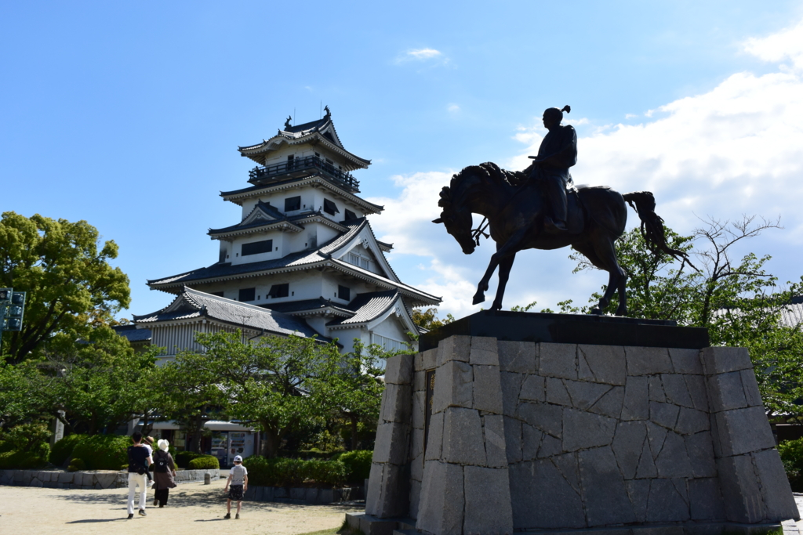

GW：今治の街＆城に行ってきたった
公開日：

ゴールデンウィークは何もする気が起きず、基本的に家でずっとゴロゴロしていたのですが、さすがの9連休をそれだけで費消するのも勿体ない。というわけで、今治まで足を延ばしてみました。隣の市なのに、まだちゃんと言ったことなかったのよ。
今治市の基本スペック
愛媛県の北東部、高縄半島に位置する人口15万（県第2位、ちなみに松山は50万ぐらい）の都市です。もともと伊予国の国衙が置かれていた地で、今の県庁所在地・松山よりも由緒のある（？）土地です。芸予諸島の一部も市域に抱えており、俺氏お薦めの大山祇神社も今治市に含まれます。しまなみ海道の景色は素晴らしく、サイクリングに訪れる人も多いみたいですね。
古来より海運の要衝で、おもな産業は造船。ここに本社を置く今治造船は日本シェアの3割、世界シェアの6％を占めるのだそうな（今治だけでやってるわけではないけどね）。あとは、タオル、焼き鳥（ゆるキャラ・バリィさんは焼き鳥になる前の姿なのだ！）なんかでも有名かも。たまに今治の人には会うのですが、役所（とちょとした観光、割とまとまった消費人口）で何となく食べていける松山と違い、自前の産業で食べているせいか、自立心と郷土愛の深い人が多いように思います。
電車（汽車じゃないよ！）で今治へ
松山から今治へは、JR 予讃線で行くことができます。2両編成（のうち、後部車両は回送という謎編成）の電車に乗って1時間ぐらいかかります。電車賃は1,000円ぐらいだったかな。近鉄だったら大阪・難波から三重・名張までいける額なので、割とコスパが悪い。しかも、乗った電車は途中の「伊予北条」止まりで、後続の観音寺行きがくるまでだいぶ待たされました。
でも、松山～今治間の車窓は海がキラキラと輝いていてとても美しい。今治なんか通らず、高縄半島をぶち抜いてくれれば岡山までの所要時間が1時間は削れると思うのですが、この景色はちょっと捨てがたいかも。
12時半ごろかな、今治駅へ到着。2階建ての・新幹線の駅を彷彿とさせる・自動改札機が似合う（ないけど）近代的な駅舎で、松山民の俺たちは動揺を隠せない。
同行の @ramusara 君と「県庁所在地の駅より立派なのは許せない！ 今すぐ松山へ移設するべきだ！」などと妙なテンションで盛り上がってしまいました。
今治港とお昼ごはん
まずはお昼ご飯を求めて、街を徘徊しました。
とりあえずお店の多そうな商店街を目指してみたのですが――人の気配がなくて震える。お土産＆地元の名物をだす小さな店が一軒あっただけで、お昼ご飯を食べるところが見つかるのか大変不安になります。
そうこうするうちに、今治港にでました。さすがにここであれば何かあるだろう、と思い最上階へ登ってみると……。
大変気持ちがよろしい。ちょっと心折れかけていたけど、これだけで今日はここにきた甲斐があったなーと思いました。
ビールを一杯やって、気力を補充。軽食も食べられそうだったけれど、それは我慢。
なぜならば、くる途中でいい感じの食堂を見つけていたのだ！（名前は忘れたけど、港のすぐそば） ここで白子の湯引きをアテにさらに一杯。
〆に B 級グルメの焼豚玉子飯をいただきました。甘いタレがご飯によく合う感じ。2つの目玉がぷるっぷるで、見ただけで美味しい。焼豚はこの目玉焼きの下に隠れています。見た目は悪いかもですが、ぐっちゃぐちゃにかき混ぜて食うのが美味しそう……。
実は煮魚定食の方も気になって仕方がなかったのですが、それはまた今度の機会に。
今治城
おなかも満足したので、今治城まで歩きます。
今治城は、藤堂高虎が縄張りをしたという海城。お堀は海と繋がっていて、海水魚も遊びに来るのだそうです。前に見たローカルニュースでは、エイが紛れ込んで優雅に泳いでいた（汗
藤堂高虎の伊勢転封のあとは養子・高吉が治めていました。彼の数奇な（？）生涯については、育ちの故郷である名張を訪れた時、藤堂屋敷の人に少し解説していただきました。
自分が今まで住んできた所が妙なところで繋がっているのは、歴史の妙かな。
天守は鉄筋コンクリート造りの復元で、門や櫓も再建されていて城構えは立派です。中の階段が古い学校か病院みたいな雰囲気で少し興ざめですが、展示は（松山城より）充実していて一見の価値があるかも（でも、撮影禁止！）。
なにより、景色がいいですね。芸予諸島が一望できます（デカいのが大島。一番右手の島が“伯方の塩”で有名な伯方島かな？ 知らんけど）。
スタンプラリーも完走して大満足でした。
夜は商店街から少し離れたところにちょっとした飲み屋街を見つけて、そこで一杯。商店街は寂しかったけど、どうやら人の流れが変わっちゃってるだけで（イオンとか？ｗ）、それなりに人の多いところもあるんですね。街づくりってそういうところも難しいなぁ……なんてちょっと思いました。
今回は河野美術館などに行けなかったので、また時間を作ってゆっくり訪れたいです。
残り8分だった (@ 今治市河野美術館) https://t.co/3wAIEeJEw7
— エロやなぎ先生 (@daruyanagi) 2017年5月4日